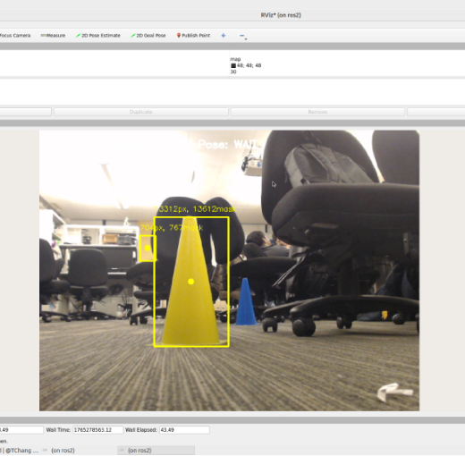
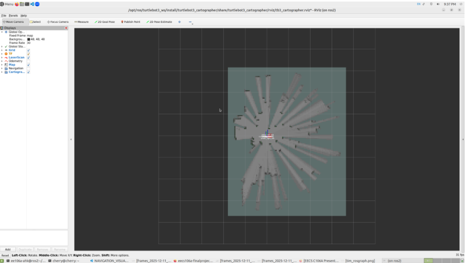

Obstacle Detection
Obstacles are detected using both lidar and camera sensors. Camera detects obstacles(Yellow Cones) through color and shape filtering. LIDAR filters raw scans which are then used to build a fast local robot-centric occupancy grid. These cone positions and the occupancy grid are used to plan paths around obstacles in our MPC node.
- Input: raw lidar / camera / fused sensor data
- Algorithm: Color segmentation, shape filtering, Ray-casting occupancy update
- Output: bounding boxes, occupancy grids, confidence scores